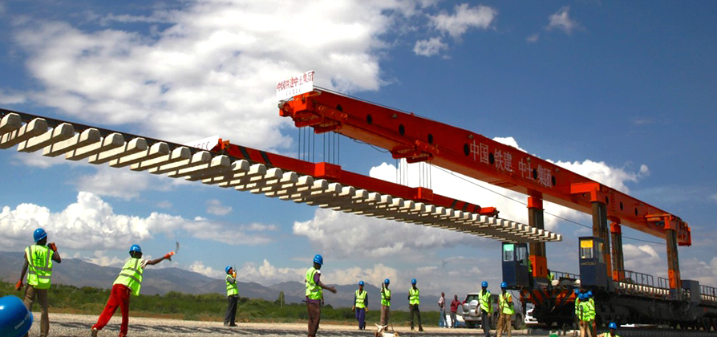
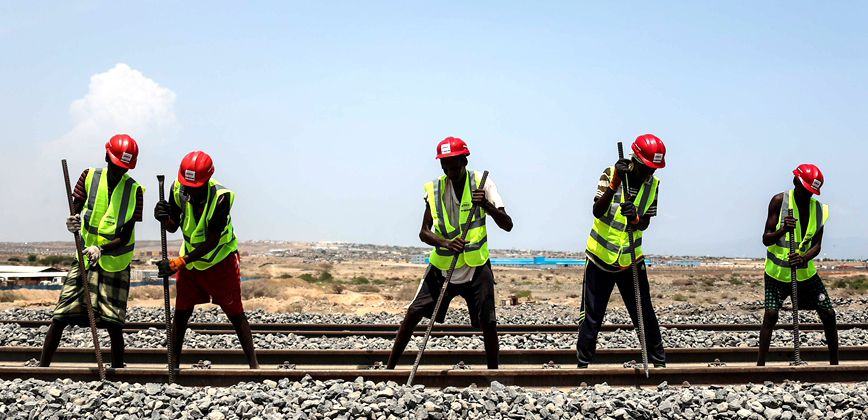
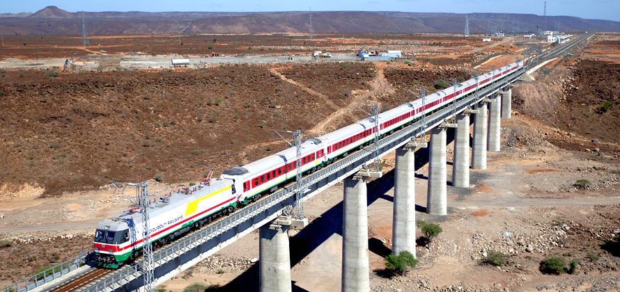
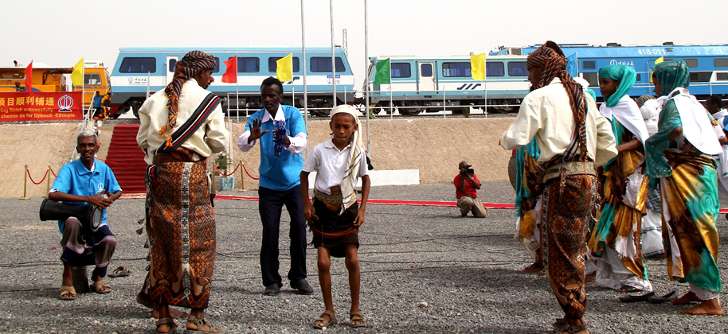

/ 越来越多的中国企业走向海外,倡导的合作共赢的理念和行动 /
首页
亚吉铁路
对埃塞来说，作为一个内陆国家，目前主要的进出口物资依赖吉布提港口。
每天进出关集装箱数量达5000个之多，因为没有铁路，大量的货物通过公路由吉布提港口运往埃塞俄比亚
，至少需要一周时间，到国内其他地区甚至需要几个月，不仅对公路造成极大的压力，也加大了物流成本,
压关、压港问题非常严重
施工现场

亚吉铁路开创的“亚吉模式”有利于增强当地的“自主造血”功能和双（多）方的互利合作共赢，
高度契合“一带一路”建设“共商、共建、共享”的理念
轨道调整作业

亚吉铁路项目是架起中国与非洲友谊的一座新桥梁。
是继上世纪的坦赞铁路之后，中国在海外修建的又一条跨国铁路。这条铁路的建成不仅会促进埃塞、
吉布提两国社会经济的联系和发展，也将辐射广大非洲内陆地区，带动整个周边地区经济发展。
行驶列车

铁路铺通仪式上，吉布提当地民众载歌载舞，表达喜悦。
作为中国企业在海外建设的第一条全产业链“走出去”的铁路，从融资、设计到施工、运营，
中国企业都参与其中。埃塞俄比亚政府在亚吉铁路沿线规划了多个工业园项目，由中国企业承建并运营，
吸引加工制造业企业入驻，从而带动当地产业发展，创造就业岗位，助力经济腾飞。
铺通仪式
